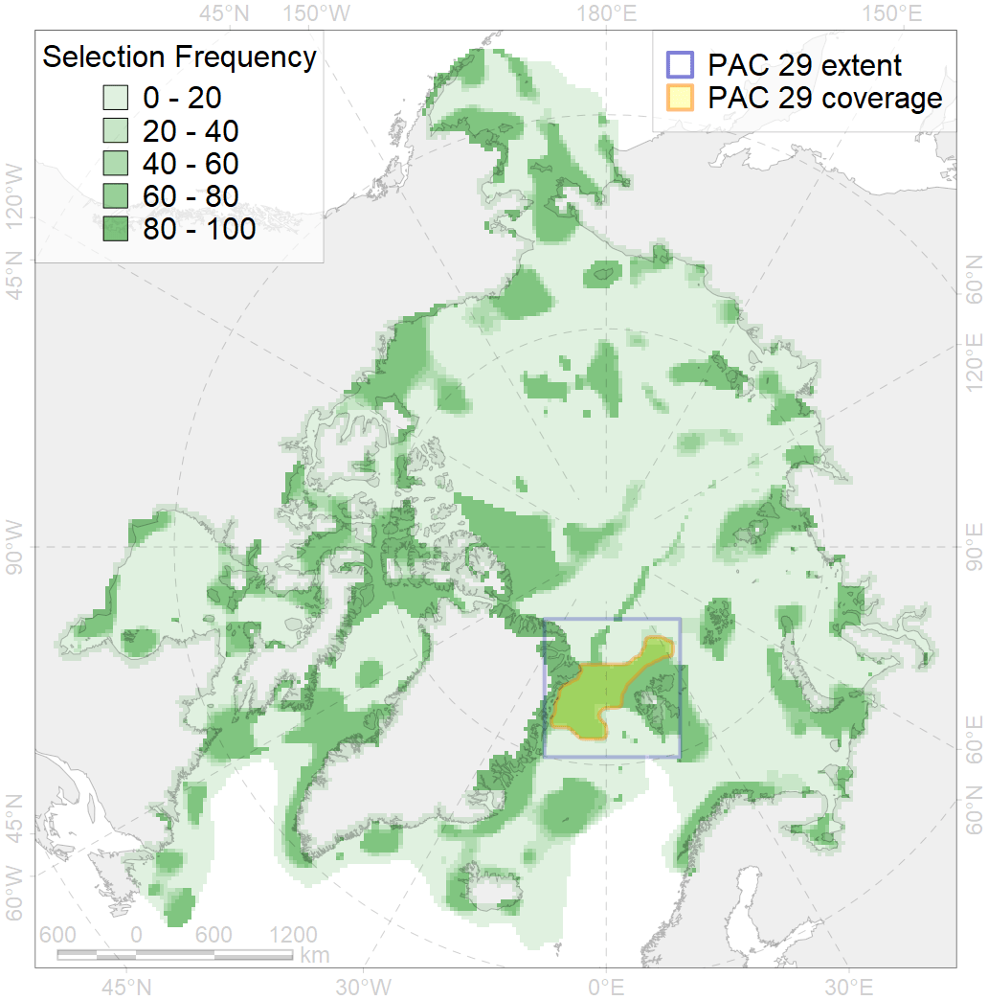
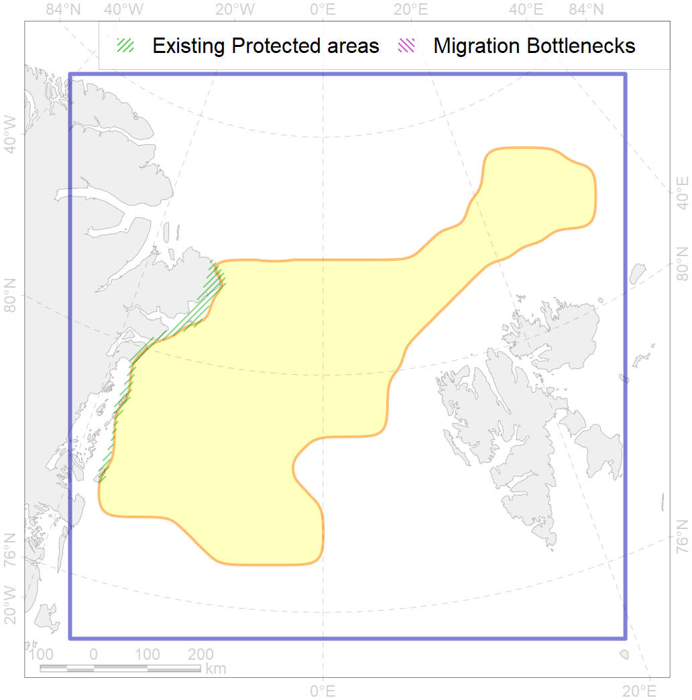

29
For more information regarding this PAC and to conduct custom spatial analysis using the PAC data or any spatial query, please consult Accenter.

1
CFs entirely within the PAC area
18
CFs at least 25% within the PAC area
17
CFs with at least 50% of their target achieved in the PAC
31
CFs with at least half of their target achieved in the PAC
| CF ID | CF Name | Proportion in the PAC | Conservation Target | Contribution to ArcNet Target Achievement | PAC’s Contribution to the Achieved Target |
|---|---|---|---|---|---|
| 7185 | VI.1.2. Terraces | 100.0% | 100.0% | 100.0% | 100.0% |
| 7262 | NE Greenland Bank | 98.9% | 70.0% | 141.3% | 98.9% |
| 7195 | VI.2.7. Canyons | 85.4% | 100.0% | 85.4% | 85.4% |
| 2059 | Harp seal foraging areas in Greenland as predicted by MIZ distribution | 70.9% | 12.0% | 574.7% | 78.1% |
| 3054 | Multiyear Ice distribution in September in the Greenland Sea LME | 70.4% | 18.0% | 383.8% | 73.9% |
| 3055 | Multiyear Ice distribution in September in the Barents Sea LME | 46.9% | 18.0% | 232.2% | 76.7% |
| 7190 | VI.2. Gakkel Ridge and Ermak Plateau VI.2.1. Plateaus | 44.8% | 50.0% | 86.7% | 85.9% |
| 3036 | Marginal Ice Zone distribution in July in the Greenland Sea LME | 41.7% | 24.0% | 167.4% | 64.2% |
| 7157 | III.5.1.1. NE Greenland medium and low profile shelf | 34.4% | 6.3% | 542.1% | 50.8% |
| 9006 | polar bear of the EG (East Greenland) subpopulation distribution | 33.9% | 32.4% | 100.6% | 48.6% |
| 5045 | Bowhead whale of the Spitsbergen population core distribution | 31.8% | 74.4% | 41.0% | 41.0% |
| 7159 | III.5.2. NE Greenland slope | 30.9% | 11.0% | 275.0% | 69.8% |
| 7156 | III.5.1. Northeast Greenland shelf and slope | 29.0% | 10.2% | 283.8% | 36.9% |
| 1004 | Atlantic Walrus Summer Distribution in East Greenland | 26.8% | 33.6% | 78.9% | 38.7% |
| 2047 | Ringed seal whelping areas in Greenland region | 26.6% | 12.0% | 217.0% | 42.4% |
| 7033 | Northern and Eastern Greenland region | 26.3% | 12.2% | 213.9% | 38.0% |
| 7158 | III.5.1.2. NE Greenland glacial troughs | 25.2% | 9.0% | 271.1% | 36.5% |
| 7053 | cold corals of the High Arctic | 25.0% | 50.0% | 27.0% | 20.4% |
| 7187 | VI.1.4. Spreading ridge | 25.0% | 25.3% | 98.3% | 56.2% |
| 7025 | Eurasian bathyal region | 22.9% | 10.6% | 203.9% | 54.5% |
| 7172 | VII.1.2. Abyssal plains | 22.5% | 28.9% | 61.3% | 50.5% |
| 7072 | I.1.2.3. Slope canyons | 22.4% | 25.0% | 75.5% | 54.1% |
| 5072 | Narwhal East Greenland stock summer distribution | 21.8% | 48.0% | 44.9% | 28.5% |
| 7071 | I.1.2.2. Barents - Kara northern slope | 20.1% | 35.0% | 48.0% | 47.4% |
| 3007 | Fast Ice distribution in the East Greenland region | 19.0% | 6.0% | 316.3% | 22.5% |
| 6040 | Ivory gull (Pagophila eburnea) postbreeding grounds in the Barents and the Kara Sea | 16.9% | 21.6% | 72.4% | 34.0% |
| 7174 | VII.1.4. Abyssal mountains | 16.0% | 23.5% | 65.6% | 33.4% |
| 6095 | Ivory gull (Pagophila eburnea) East Greenland breeding colonies buffer feeding area | 14.2% | 43.2% | 32.3% | 31.5% |
| 7194 | VI.2.6. Rift valleys | 13.7% | 69.0% | 19.7% | 19.6% |
| 2061 | Ringed seal circumpolar foraging areas as predicted by MIZ distribution | 13.0% | 24.0% | 52.3% | 27.5% |
| 7186 | VI.1.3. Ridges | 12.8% | 44.3% | 28.9% | 27.3% |
| 2028 | Hooded seal molting areas | 12.8% | 38.4% | 32.0% | 30.9% |
| 3037 | Marginal Ice Zone distribution in July in the Barents Sea LME | 12.5% | 24.0% | 49.9% | 16.7% |
| 7193 | VI.2.4. Spreading ridges | 11.4% | 28.4% | 40.1% | 25.6% |
| 7014 | Core of Canadian - Greenland Province of Arcto-Atlantic zoogeographical region | 10.4% | 7.4% | 138.8% | 19.3% |
| 3025 | Marginal Ice Zone distribution in April in the Greenland Sea LME | 10.3% | 35.0% | 26.9% | 25.7% |
| 7173 | VII.1.3. Abyssal hills | 9.8% | 14.3% | 59.6% | 19.2% |
| 7070 | I.1.2.1. Barents western slope | 8.3% | 17.0% | 47.7% | 22.5% |
| 3122 | Polynyas distribution in the East Greenland region | 6.1% | 12.0% | 50.8% | 6.3% |
| 4074 | Fish zoogeography, Arctic Region, High-Arctic Shelf Province, Canadian-Greenland District | 6.0% | 7.4% | 80.5% | 11.9% |
| 7192 | VI.2.3. Ridges | 5.8% | 52.9% | 10.9% | 10.8% |
| 3033 | Marginal Ice Zone distribution in July in the Northern Canadian Archipelago LME | 4.9% | 24.0% | 20.6% | 12.8% |
| 4032 | Range of the Arctic skate (Amblyraja hyperborea) | 4.7% | 3.0% | 155.3% | 11.9% |
| 7175 | VII.2. Amundsen and Nansen Basins VII.2.1. Rises (slope foot) | 4.0% | 11.9% | 28.3% | 28.0% |
| 7027 | Greenland Sea abyssal region | 4.0% | 15.7% | 21.2% | 21.0% |
| 5046 | Bowhead whale of the Spitsbergen population home range | 3.9% | 18.6% | 17.2% | 17.1% |
| 5112 | Arctic Cetaceans (beluga, bowhead, narwhal) winter habitats as predicterd by MIZ | 3.6% | 40.0% | 8.4% | 6.9% |
| 7017 | Amundsen and Nansen Basins abyssal region | 3.1% | 7.0% | 37.8% | 20.7% |
| 4079 | Fish zoogeography, Arctic Region, Arctic Abyssal Province (Scandian, Central-Arctic and Baffin Deep-sea Districts ) | 2.9% | 4.0% | 67.7% | 11.5% |
| 5037 | Blue whale summer feeding areas in the Northeast Atlantic | 2.9% | 25.2% | 11.5% | 8.8% |
| 3031 | Marginal Ice Zone distribution in July in the Central Arctic LME | 2.8% | 24.0% | 11.6% | 11.5% |
| 5051 | Fin whale summer feeding areas in Norway | 2.7% | 26.4% | 10.0% | 7.3% |
| 4096 | Range of the Glacial eelpout (Lycodes frigidus) | 2.4% | 6.0% | 36.0% | 9.2% |
| 4037 | Distribution of the Glacial cod (Arctogadus glacialis) | 2.2% | 9.0% | 23.0% | 5.6% |
| 4041 | Range of the Polar Cod (Boreogadus saida) | 1.9% | 12.0% | 14.6% | 5.6% |
| 7176 | VII.2.2. Abyssal plains | 1.5% | 8.5% | 12.5% | 12.4% |
| 7177 | VII.2.3. Abyssal hills | 1.2% | 8.6% | 11.8% | 11.1% |